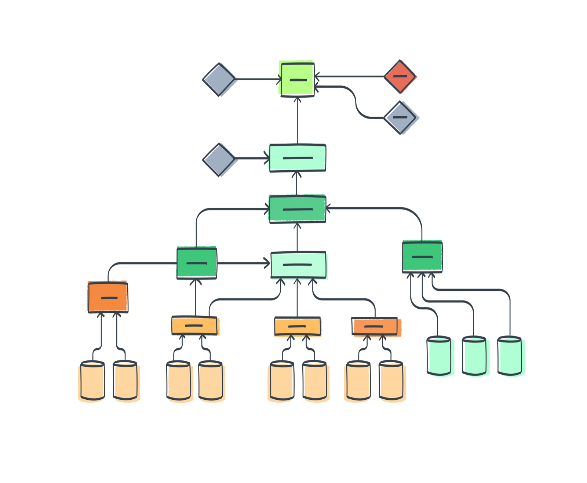

Act transparently and responsibly¶

The imperative of acting transparently and responsibly is a call to all AI and data science researchers, developers, deployers and users to marshal the habits of responsible research and innovation cultivated in the CARE processes to produce systems that prioritise data stewardship and that are robust, accountable, fair, non-discriminatory, explainable, reproducible, and replicable.
While the mechanisms and procedures which are put in place to ensure that these normative goals are achieved will differ from project to project we can summarise the following priorities that should be incorporated into a team's governance, self-assessment, and reporting practices:
-
Full documentation of data provenance, lineage, linkage, and sourcing:
This involves keeping track of and documenting both responsible data management practices across the entire project lifecycle, from data extraction or procurement and data analysis, cleaning, and pre-processing to data use, retention, deletion, and updating.[@bender2018]-[@gebru2021]-[@holland2018]
It also involves demonstrating that the data is ethically sourced, responsibly linked, and legally available for the project's purposes[@weinhardt2020] and making explicit measures taken to ensure data quality (source integrity and measurement accuracy, timeliness and recency, relevance, sufficiency of quantity, dataset representativeness), data integrity (attributability, consistency, completeness, contemporareousness, traceability, and auditability) and FAIR data (findable, accessible, interoperable, and reusable).
-
Full documentation of privacy, confidentiality, consent, and data protection due diligence.
This involves demonstrating that data has been handled securely and responsibly from beginning to end of the project's lifecycle so that any potential breaches of confidentiality, privacy, and anonymity have been prevented and any risks of re-identification through triangulation and data linkage mitigated.
Regardless of the jurisdictions of data collection and use, the rights and interests of data subjects should always aimed to be optimally protected by adhering to the highest standards of privacy preservation, data protection, and responsible data handling and storage.
-
Transparent and accountable reporting of processes and results and appropriate publicity of datasets.
This involves that results of model design, development, and deployment should be carried out in a way that enables the interpretability, reproducibility, and replicability of the results.
Research design, analysis, and reporting should be pursued in an interpretability-aware manner that prioritises process transparency, the understandability of models, and the accessibility and explainability of the rationale behind their results.
-
An end-to-end process for bias self-assessment.
This should cover all research stages as well as all sources of biases that could arise in the data, in the data collection, in the data pre-processing, in the organising, categorising, describing, annotating, structuring of data (text-as-data, in particular), and in research design and execution choices.